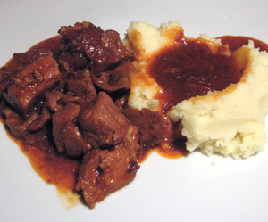

Schweinragout mit Dörrtomaten und Steinpilzen
5 von 640 g gedörrten Steinpilze in ein Sieb geben und unter
fliessendem lauwarmem Wasser gründlich
durchspülen. In eine Schüssel geben, mit warmem
Wasser übergiessen und mindestens 20 Minuten
quellen lassen. Dann abschütten, gut abtropfen
lassen.Ca. 12 Dörrtomaten auf Küchenpapier abtropfen lassen
in schmale Streifen schneiden. Schalotte und
Knoblauch schälen und fein hacken. Das Schweinsragout salzen und pfeffern. In einem
Bräter oder im Schmortopf in der sehr heissen
Bratbutter in 3 Portionen gut anbraten.
Herausnehmen. Im Bratensatz Schalotte und Knoblauch andünsten.
Dann Dörrtomaten, Steinpilze und Tomatenpüree
beifügen und kurz mitrösten. Mit 2 Dl Portwein und
2 Dl Bouillon ablöschen, das Fleisch wieder beifügen
und alles zugedeckt während knapp 2 Stunden sehr
weich schmoren. Am Schluss die Crème fraîche mit etwas heisser
Saucenflüssigkeit gut verrühren, beifügen und die
Sauce nochmals kurz kochen lassen. Mit Salz und
Pfeffer abschmecken.
